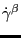
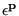
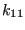
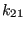
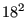
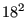
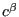
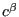

This model describes small deformations for elastically anisotropic materials with a von Mises type yield surface. Often, this model is used as a compromise for anisotropic materials with lack of data or detailed knowledge about the anisotropic behavior in the viscoplastic range.
The total strain is supposed to be the sum of the elastic strain and the plastic strain:
| (283) |
An isotropic hardening variable  and a kinematic
hardening tensor
are introduced representing the
isotropic and kinematic change of the yield surface,
respectively. The yield surface takes the form:
and a kinematic
hardening tensor
are introduced representing the
isotropic and kinematic change of the yield surface,
respectively. The yield surface takes the form:
 |
(284) |
where
 is the deviatoric stress tensor, and
is the deviatoric stress tensor, and  is the
size of the elastic range at zero yield. The constitutive equations for the
hardening variables satisfy:
is the
size of the elastic range at zero yield. The constitutive equations for the
hardening variables satisfy:
| (285) |
and
| (286) |
where  and
are the hardening variables
in strain space. It can be shown that
and
are the hardening variables
in strain space. It can be shown that
| (287) |
| (288) |
where  is the equivalent plastic strain defined by
| (289) |
and is the equivalent value of the tensor defined in a similar way. Thus, the constitutive equations amount to
| (290) |
and
| (291) |
where
| (292) |
has the meaning of an equivalent stress value or von Mises value. The
same applies to  . Consequently, the constitutive equations assume a
linear relationship between the hardening stress and the equivalent
plastic strain.
. Consequently, the constitutive equations assume a
linear relationship between the hardening stress and the equivalent
plastic strain.
The constitutive equation for the stress is Hooke's law:
|  | (293) |
The evolution equations for the plastic strain and the hardening variables in strain space are given by:
| (294) |
| (295) |
and
| (296) |
where
| (297) |
The variable is the consistency coefficient known from the Kuhn-Tucker conditions in optimization theory [45]. It can be proven to satisfy:
| (298) |
Finally, the creep rate is modeled as a power law function of the yield exceedance and total time t:
 |
(299) |
The brackets
 reduce negative function values to zero
while leaving positive values unchanged, i.e.
reduce negative function values to zero
while leaving positive values unchanged, i.e.
 if
if  and
and
 if
if  .
.
In the present implementation orthotropic elastic behavior is
assumed. Consequently, for each temperature 15
constants need to be defined: the elastic constants ,
,  ,
, ,
,
,
,  ,
, ,
,
,
,  , and the viscoplastic constants
.
, and the viscoplastic constants
.
The material definition consists of a *MATERIAL card defining the name of the material. This name HAS TO START WITH ''ANISO_PLAS'' but can be up to 80 characters long. Thus, the last 70 characters can be freely chosen by the user. Within the material definition a *USER MATERIAL card has to be used satisfying:
First line:
Following lines, in sets of 2:
First line of set:
Repeat this set if needed to define complete temperature dependence.
The principal axes of the material are assumed to coincide with the global coordinate system. If this is not the case, use an *ORIENTATION card to define a local system.
For this model, there are 14 internal state variables:
These variables are accessible through the *EL PRINT (.dat file) and *EL FILE (.frd file) keywords in exactly this order (label SDV). The *DEPVAR card must be included in the material definition with a value of 14.
Example: *MATERIAL,NAME=ANISO_PLAS *USER MATERIAL,CONSTANTS=15 500000.,157200.,500000.,157200.,157200.,500000.,126200.,126200., 126200.,0.,0.,0.,1.E-10,5,0. *DEPVAR 14
defines a single crystal with elastic constants 500000., 157200., 500000., 157200., 157200., 500000., 126200., 126200., 126200., and viscoplastic parameters , , , , and . Thus, the yield surface has a zero radius and there is no hardening. Only creep is activated.